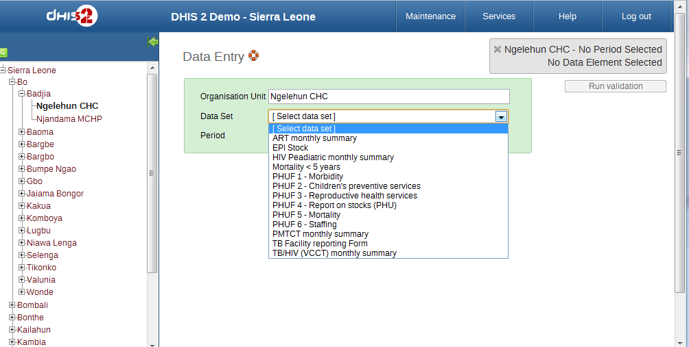
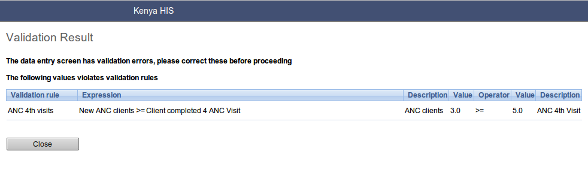
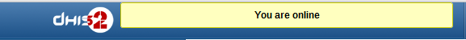
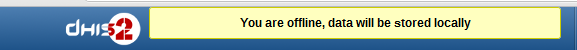
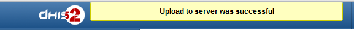

Table of Contents
To open the data entry window click on the services tab displayed in the main menu. A drop down menu will appear listing the services provided by DHIS 2. To use the data entry module, simply search for " in the "Apps" menu.
The data entry module is where data is manually registered in the DHIS 2 database. Data is registered for an organisation unit (also known as an orgunit) , a period, and a set of data elements at a time.
In the context of the Deans Dashboard, you would normally be entering data for a specific unit, such as a faculty or school.
To start entering data, the first step is to open the correct form by following these steps:
-
Locate the orgunit you want to register data for in the tree menu to the left. You can expand a branch of the organisation unit tree by clicking on the + symbol to the left of the name of the orgunit you are interested in. You can close a branch of thr orgunit tree by clicking on the - symbol to the left of the orgunit you are interested in. A quick way to find an orgunit is to use the search box just above the tree (the green symbol). Once you have located the orgunit, click on the name. The name of the orgunit should now be highlighted in orange when selected.
-
Once you have selected an orgunit from the tree, a possible list of data sets will be displayed in the drop -down box called "Datasets". Select a data set from the drop-down list of data sets.
-
Next, select a period to register data for. The available periods are controlled by the period type of the data set (reporting frequency). You can jump a year back or forward by using the arrows above the period. For some data sets, you may not be able to enter data in the future.
-
Certain datasets may have an attribute. If the dataset has one, it will be displayed below the period drop-down box after you select the period you are entering data for. Select the appropriate attribute.
By now you should see the data entry form. From a form design perspective, there are three types for forms: default forms, section forms and custom forms. If a custom form exists, it will be displayed, followed in order of precedence by a section form, and finally a default form.
|  |
Start entering data by clicking inside the first field and type in the value. Move to the next field using the Tab button. Shift+Tab will take you back one step. You can also use the "up" and "down" arrow keys to navigate between the form cells. The values are saved immediately and do not require to be saved at a later stage. A green field indicates that the value has been saved in the system (on the server).
Input validation: If you type in an invalid value, e.g. a character in a field that only accepts numeric values you will get a pop-up that explains the problem and the field will be coloured yellow (not saved) until you have corrected the value. If you have defined a min/max range for the field (data element+organisation unit combination) a pop-up message will notify you when the value is out of range, and the value will remain unsaved until you have changed the value (or updated the range and then re-entered the value).
Disabled fields: If a field is disabled (grey) it means that the field can and should not be filled. The cursor will automatically jump to the next open field.
Data history: By double-clicking on any input field in the form a data history window opens showing the last 12 values registered for the current field (organisation unit+data element+categoryoptioncombo) in a bar chart. This window also shows the min and max range and allows for adjusting the range for the specific organisation unit and data element combination.
 |
Follow Up: In the data history window there is also a feature to tag or star a value. E.g. a suspicious value that needs further investigation can be kept in the system, but marked for Follow-Up. In the Data Quality module you can run a Follow-Up analysis and view all values marked for Follow-Up, and then later edit the values if proved incorrect.
If you wish to enter data which has already been entered, simply replace the data entry value with the update values.
If you want to delete a data value completely, you should select the value of interest, and press "Delete" on your keyboard. If you enter a zero and the data element has been configured to not store zeros, the previous data value (i.e. the one you wish to modify) will not be overwritten with the new value. Therefore, it is better practice to delete the data value completely (waiting for the cell to turn green) and then to enter the new value.
When all the available values for the form has been filled in you can run a validation check on the data in the form. Click on the "Run Validation" button in the top right corner. All validation rules which involves data elements in the current form (dataset) will be run against the new data. Upon completion you will be presented with a list of violations or a simply a message that says "The data entry screen successfully passed validation". See the Data Quality chapter for information on how to define such validation rules.
When you have corrected any erroneous values and are done with the form the recommended practice is to click on the Complete button below the form to register the form as complete. This information is used when generating completeness reports for district, county, province or the national level.
|  |
The data entry module will function even if during data entry the Internet connectivity is not stable. In order to utilize this functionality, you must login to the server while Internet connectivity is present, but if during data entry, the Internet link between your computer and the server becomes unstable, data can still be entered into the data entry form, saved to your local computer, and then pushed to the server once the Internet connectivity has been restored. Data can be entered and stored locally while being off-line and uploaded to the central server when on-line. This means that the on-line deployment strategy will be more viable in areas with unstable Internet connectivity. The total bandwidth usage is greatly reduced since forms no longer are retrieved from the server for each rendering.
When the server is able to be reached through the Internet connection, a message is displayed at the top of the data entry screen below.
|  |
If the Internet connection should disconnect for some reason during the data entry process, this will be detected by the application, and you will be informed that your data will be stored locally.
|  |
Data entry can proceed as normal. Once you have entered all of the necessary data, and the application detects that the server is back on-line, you will be informed that you have data which needs to be synchronized with the server.
Once the data has successfully synchronized with the server, you will receive a confirmation message that the data has been successfully uploaded to the server.
|  |
In some scenarios it is beneficial to enter data for multiple organisation units in the same data entry form, for instance if there are few data elements in the form and a huge number of organisation units in the hierarchy. In that case you can enable multi-organisation unit data entry by going to "System settings" and tick the "Enable multi organisation unit forms" setting. Then, in data entry, select the organisation unit immediately above the organisation unit you want to enter for in the hierarchy. Note that this only work for the "section" based forms. You should now see the data elements appearing as columns and the organisation units appearing as rows in the form. Note that the data entry forms should still be assigned to the facilities that you actually enter data for, i.e. the organisation units now appearing in the form.